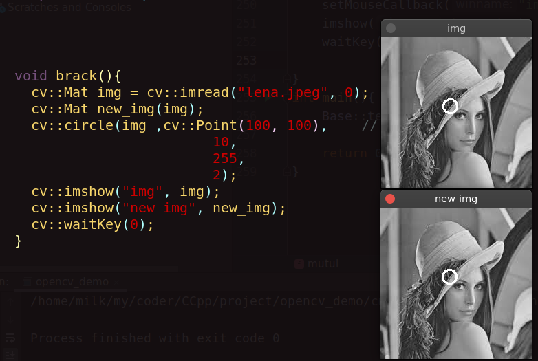
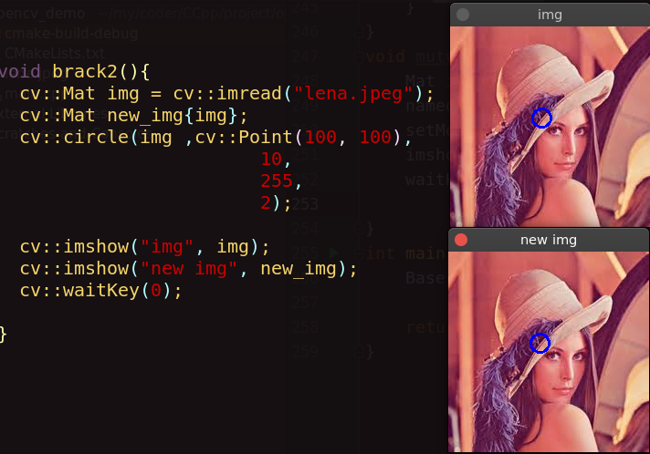
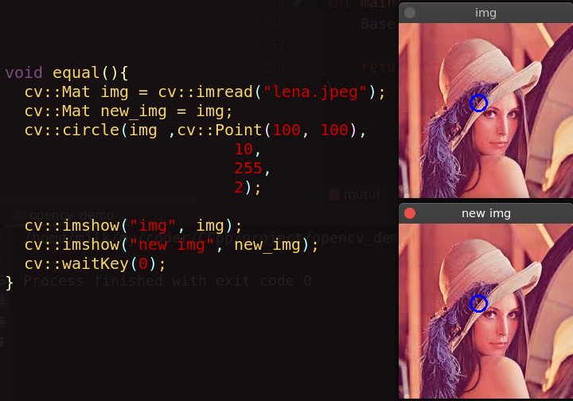
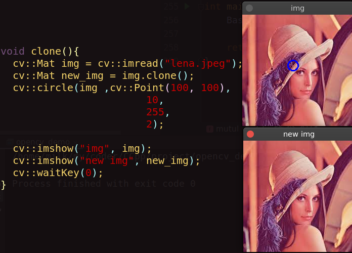
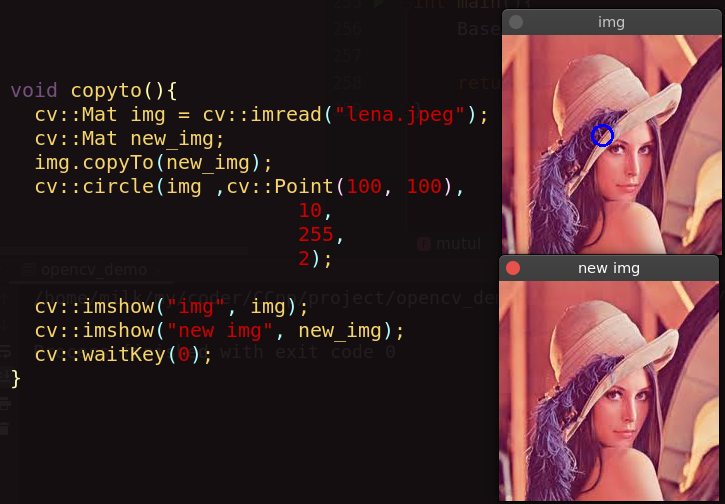
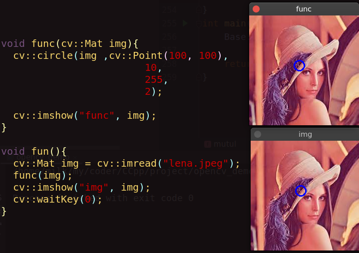

OpenCV中Mat数据类型
- categories
- >
- OpenCV
写在前面
作为 OpenCV 基础数据类型，有必要了解一下 cv::Mat 的一些知识。
关于 cv::Mat 数据类型
cv::Mat 的组成
头部+数据块
头部: 矩阵所有相关信息(大小、通道数量、数据类型等)。头部拥有一个指向数据块的指针，data 属性。
数据块: 图像中所有像素的值。
cv::Mat 重要属性:
只有在明确要求时内存块才会被复制。大多数操作仅仅复制了 cv::Mat 的头部。
优点： 提高应用程序的运行效率，避免内存泄漏。
缺点: 个人认为操作上稍微需要注意。
浅复制与深复制概念:
浅复制共享同一个数据块，对数据块的修改会影响到其他的引用。
深复制生成数据块的副本，对原数据块的修改与新的数据块副本无关。
cv::Mat 深复制和浅复制
Mat 浅复制
Mat new_img(img);
Mat new_img{img};
Mat new_img = img;
// 在函数中：
func(Mat &img);
func(Mat img);
func(const Mat &img);
func(const Mat const img); // 报错
func(const Mat const &img); // 报错Mat 深复制
Mat new_img = img.clone();
Mat new_img; img.copyTo(new_img);验证
验证()和{}
 验证直接赋值
验证clone
验证copyTo
验证函数
总结
只有clone和copyTo能实现 Mat 类型数据的深度复制。
comment:
- LiveRe
- Valine